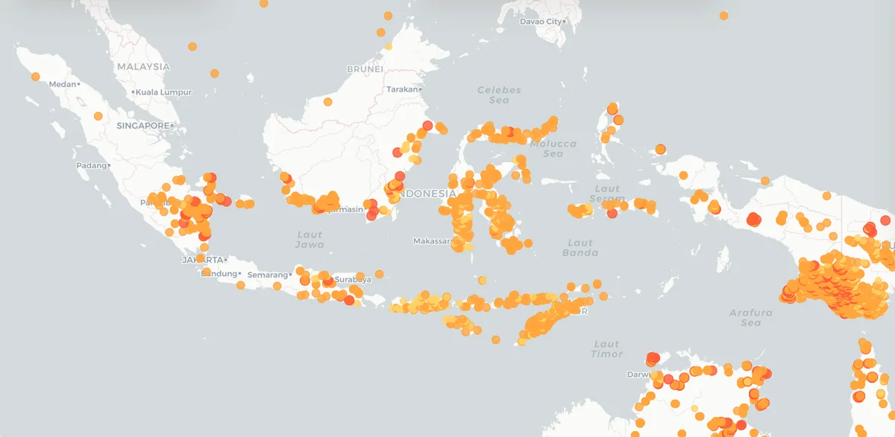

Masuk ke akun pemantauan
Pantau titik api kebakaran hutan Indonesia dari data satelit NASA FIRMS.
Pantau titik api kebakaran hutan secara real-time
Deteksi titik api dari satelit NASA FIRMS pada satu peta interaktif, tanpa istilah teknis yang membingungkan.
Buka Peta Pemantauan
Peta interaktif
Lihat sebaran titik api di seluruh Indonesia dalam satu peta.
Filter wilayah & waktu
Persempit tampilan berdasarkan tanggal, tingkat keyakinan, dan wilayah.
Info detail titik api
Klik satu titik untuk melihat lokasi, waktu deteksi, dan intensitasnya.
Memperbarui…
Memuat data satelit…
- Warna = keyakinan:
- Rendah
- Sedang
- Tinggi
- Ukuran = FRP
Tidak ada deteksi pada filter ini
Longgarkan filter tanggal, tingkat keyakinan, atau FRP untuk melihat titik api.
Wilayah tidak ditemukan
Coba gunakan nama provinsi atau kabupaten, misalnya “Kalimantan Tengah” atau “Riau”.
Aktifkan notifikasi wilayah
- Pilih wilayah
- Atur ambang
- Konfirmasi
Notifikasi berhasil diaktifkan
Kami akan mengirimkan pembaruan saat ada deteksi baru sesuai pengaturanmu.
Tentang data
Data berasal dari NASA FIRMS (satelit VIIRS), diperbarui beberapa kali sehari dan mencakup 5 hari terakhir. Titik api adalah anomali termal, bukan konfirmasi kebakaran.
FRP (Fire Radiative Power, MW) mengukur energi radiasi api: semakin besar, semakin intens. Wilayah ditentukan dari kotak koordinat kasar, bukan batas administratif resmi. Jika layanan data tidak dapat dijangkau, aplikasi menampilkan data contoh dengan label yang jelas.